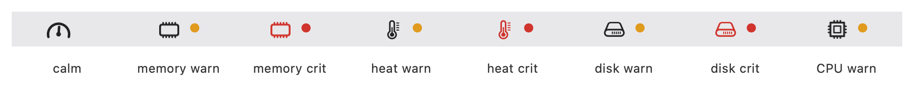
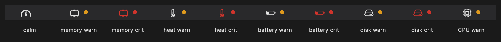

Help
Everything Activity Monitor shows, on one screen. Each number below says what it means and what yours is right now.
What the numbers mean
When memory is tight
Keyboard shortcuts
Menu bar icon
A small icon that always keeps the same width, so it never pushes your other icons around. Click it for the numbers and the top memory users. Right-click or ⌃-click it for Open at Login, Help and Quit. Vitals opens at login by itself; untick Open at Login there if you don't want that. If another app already uses ⌃⌥⌘V, that menu says so.


What Vitals shows
Vitals reads the same counters Activity Monitor does, every 2 seconds, and puts all five of its tabs on one screen: CPU, Memory, Energy, Disk and Network. The list at the bottom has every Activity Monitor column at once. Helper processes sit under the app they belong to, and your Claude Code sessions are grouped together with a dot in their model's color (purple Opus, orange Sonnet, teal Haiku, pink Fable). Each dot is read from that session's own latest answer, so it follows a switch of model; it stays gray until Vitals can tell. A process on its own says in gray who started it, like "Claude Code · my-project", and a "node" or "python3" is named after what it runs, like "vite".
Colors only show up when something needs you: amber when something is strained, red when it's critical. Everything healthy stays gray.